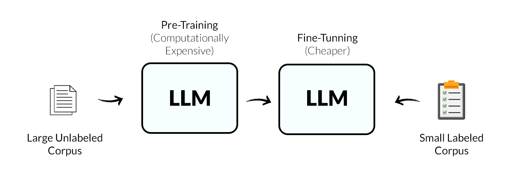

What is Fine-Tuning?
- Fine-tuning is the process of taking a pre-trained model and performing additional training on it.
- This additional training uses a smaller, specialized dataset relevant to your specific task.
- It's a resource-efficient approach, as training a new LLM from scratch requires enormous computational power and time.
